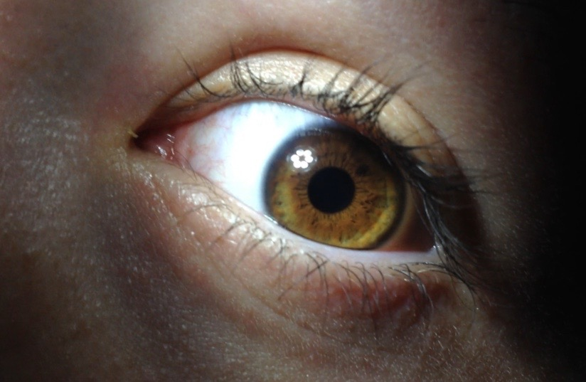
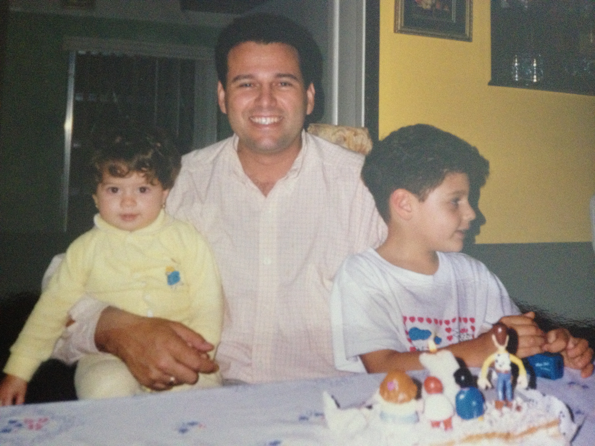
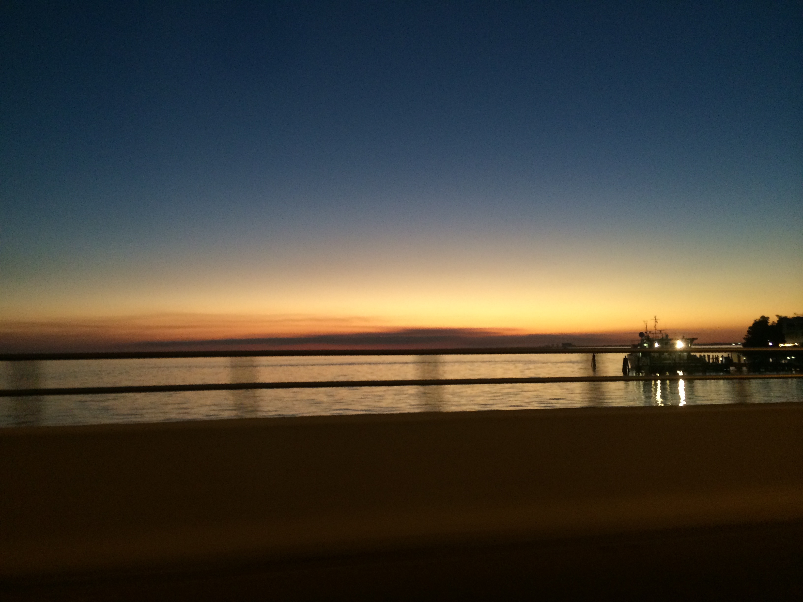
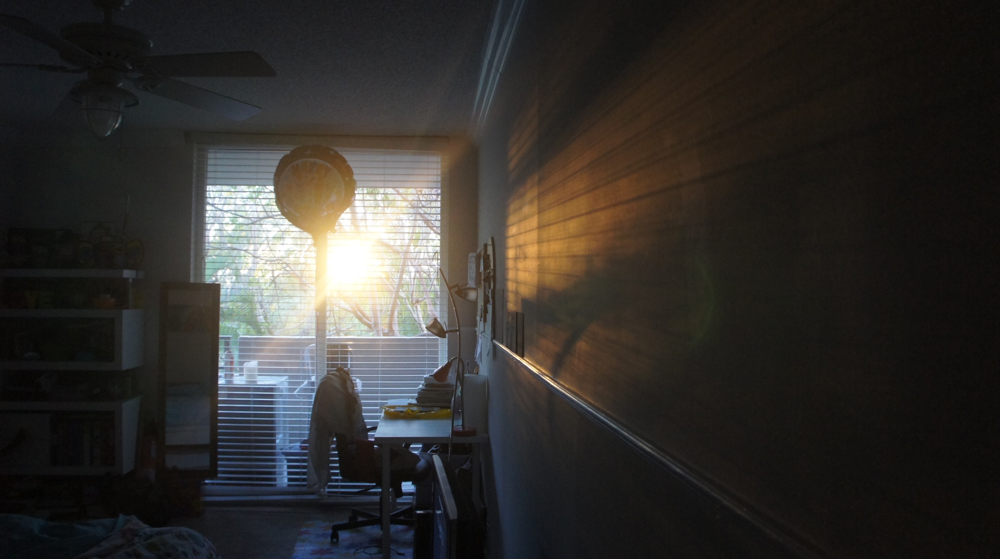
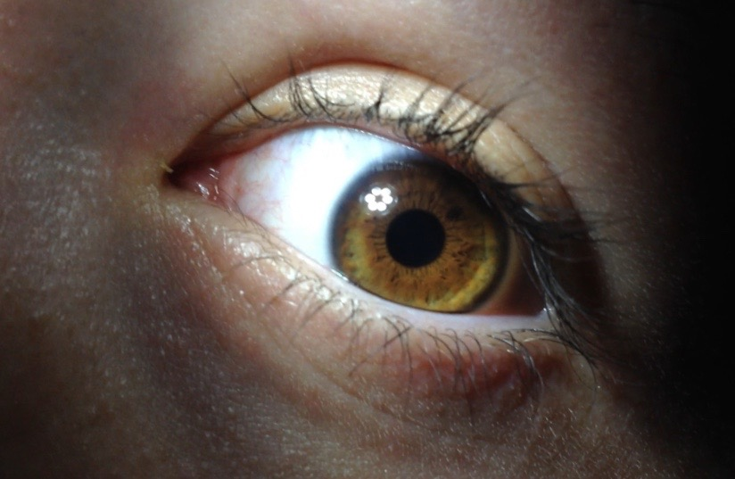
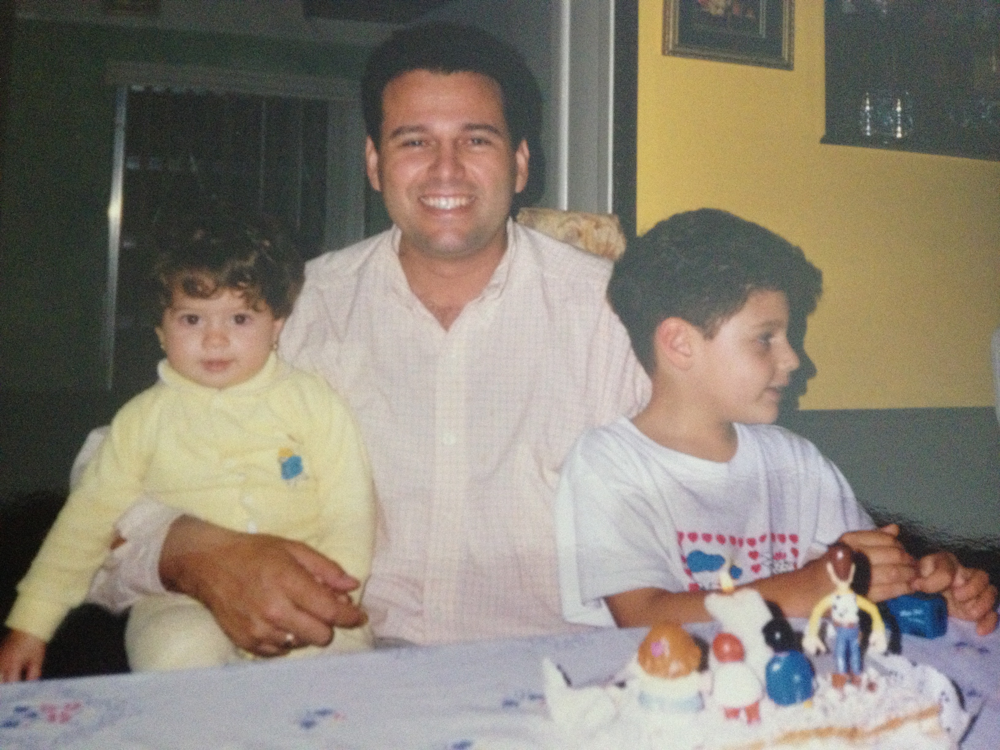
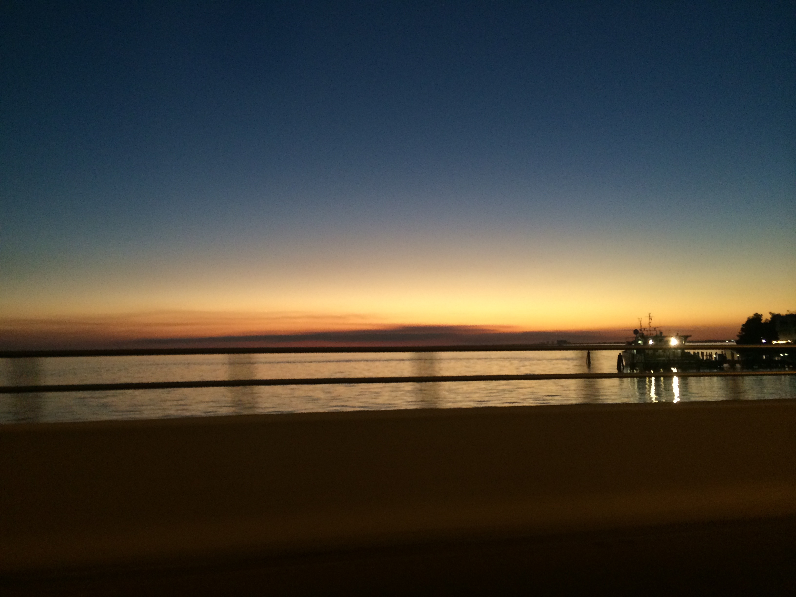
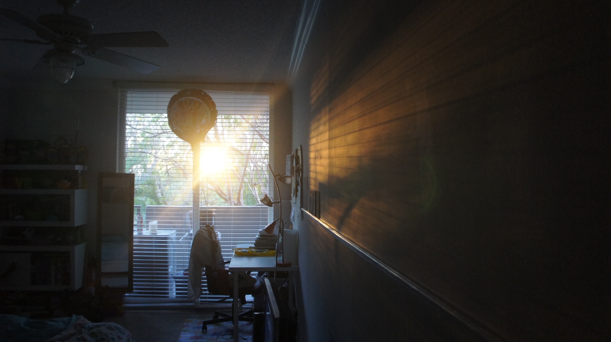

'Yellow: Through My Eyes' is a clickable album. Below you can see the images that i would use and they would all lead to one another in an order from left to right and then it would lead you back to the begining to revist the pictures.
Yellow: Through My Eyes

 






